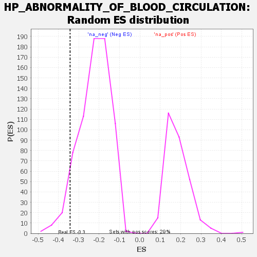

| | | Dataset | genes_ranked_stat_0.1 |
| Phenotype | NoPhenotypeAvailable |
| Upregulated in class | na_neg |
| GeneSet | HP_ABNORMALITY_OF_BLOOD_CIRCULATION |
| Enrichment Score (ES) | -0.3427512 |
| Normalized Enrichment Score (NES) | -1.5429214 |
| Nominal p-value | 0.05957447 |
| FDR q-value | 1.0 |
| FWER p-Value | 1.0 |
Table: GSEA Results Summary
 Fig 1: Enrichment plot: HP_ABNORMALITY_OF_BLOOD_CIRCULATION
Fig 1: Enrichment plot: HP_ABNORMALITY_OF_BLOOD_CIRCULATION
Profile of the Running ES Score & Positions of GeneSet Members on the Rank Ordered List

Fig 2: HP_ABNORMALITY_OF_BLOOD_CIRCULATION: Random ES distribution
Gene set null distribution of ES for HP_ABNORMALITY_OF_BLOOD_CIRCULATION